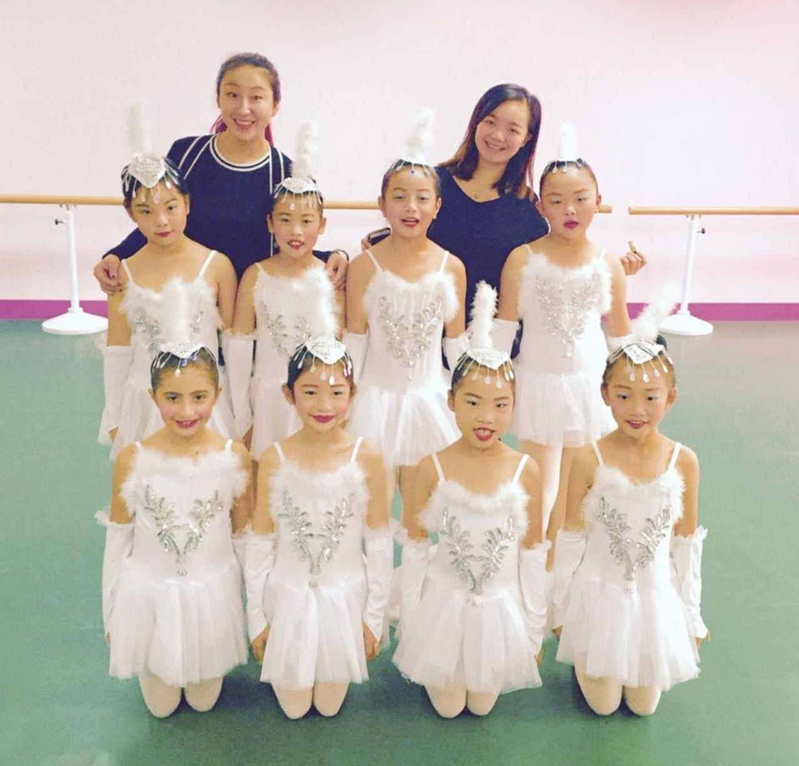
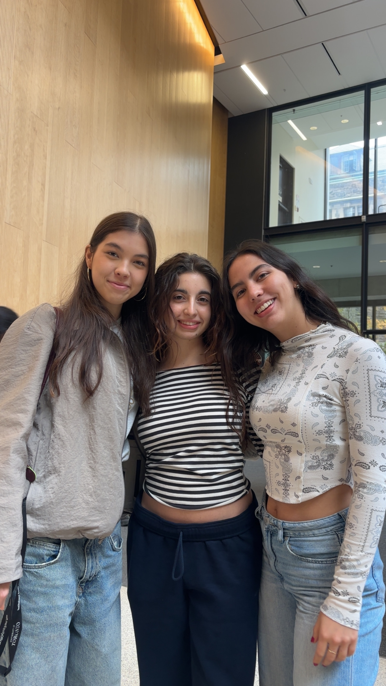
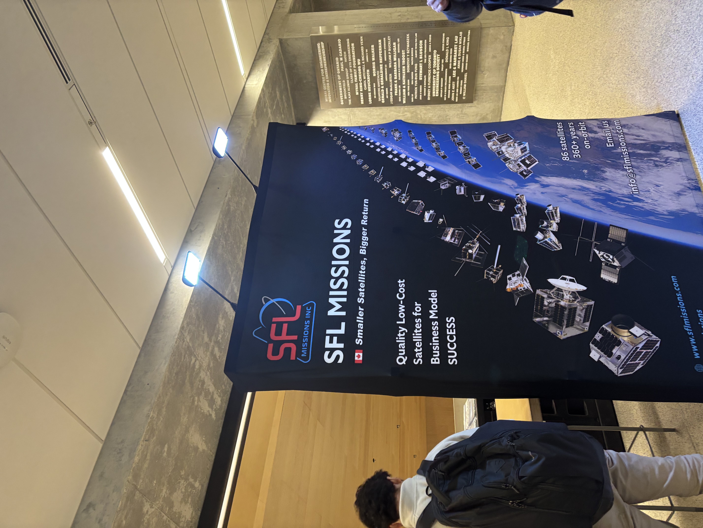

My Position
I grew up moving between countries, constantly adapting to new environments, cultures, and ways of thinking. This experience shaped how I engage with the world: by observing before acting, questioning assumptions, and recognizing that any problem can be interpreted in multiple ways depending on perspective. It has made me comfortable working in uncertainty and attentive to context, both of which are essential in engineering design.
Alongside this, ballet has been a defining part of my life. Through it, I developed discipline, precision, and an acute awareness of how individual movements contribute to a larger system. Every action in ballet requires balance, timing, and coordination, where success depends not on isolated steps, but on how they connect and flow together. This perspective carries directly into how I approach engineering, as the design of interconnected systems where performance emerges from the relationships between components.
In my design work, I approach problems step-by-step, by first understanding their context, identifying stakeholders, constraints, and the conditions under which a system must operate. I focus on framing the problem carefully, recognizing that the way a problem is defined determines the direction and quality of its solution. For example, in our wristband applicator project, framing the problem around staff workload and child interaction, rather than just speed, shifted the design toward a system that balanced efficiency with safety and usability. From there, I explore a wide range of possibilities before narrowing down options using clear criteria and evidence.
Looking forward, I am drawn to aerospace engineering and space exploration, fields that demand both precision and the ability to work within complex, interconnected systems. In many ways, this reflects what first drew me to ballet. Just as a performance relies on coordination, timing, and the seamless integration of individual movements, aerospace systems require careful alignment of multiple components working together under strict constraints. Small errors can propagate through an entire system, making attention to detail and system awareness essential.
My curiosity drives me toward questions that extend beyond immediate problems, how we can understand environments beyond Earth, how we can identify habitable exoplanets, and how engineering can expand what is possible. At the same time, this curiosity is grounded in a sense of responsibility. Engineering decisions carry consequences, and working in fields such as aerospace requires consideration not only of technical success but of long-term impact and sustainability.
Collaboration is central to both my background and my future goals. In ballet, no performance exists in isolation; it depends on trust, communication, and awareness of others. I approach engineering in the same way, valuing diverse perspectives and working with others to build solutions that are stronger than any individual contribution.
Core Values
- Rigour — I shifted from relying on intuition to evaluating ideas using measurable criteria such as efficiency and safety.
- Responsibility — I now consider the real-world impact of engineering decisions on users and systems.
- Collaboration — I shifted from sharing ideas to actively integrating feedback into design decisions.
- Curiosity — I learned to question the problem itself rather than immediately solving it.
Vision
I want to work on problems that genuinely matter, challenges at the intersection of technology, society, and sustainability. I am drawn to systems that shape how people live, work, and connect, and I believe engineers have a unique ability and obligation to contribute to these spaces. I am particularly interested in space exploration, not only as a technical challenge but as an opportunity to advance society in a responsible and sustainable way.
In the long run, I hope to build expertise that bridges the technical and the human, not as someone who knows a little of everything, but as someone who can navigate complexity with both precision and empathy.
My vision is to contribute to work that lasts: infrastructure, systems, or ideas that outlive the project.
My approach is shaped by a fusion of critical thought, core values, and a commitment to global impact. Nobel laureate Elie Wiesel once wrote that “there is divine beauty in learning,” a sentiment that defines my practice.
For me, engineering is where these ideas converge, with precision, curiosity, responsibility, and collaboration, allowing me to design systems that are not only technically sound but thoughtfully integrated within a broader context.
Images That Shaped My Position



